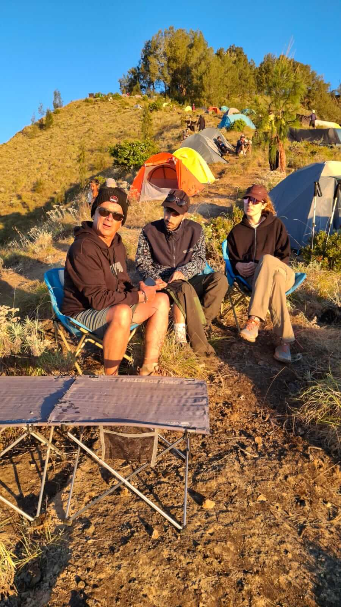

Plan Your Trek · 4 min read
Best Time to Hike Mount Rinjani: Seasonal Guide 2026
When is the best time to hike Mount Rinjani? Complete guide covering dry season, weather patterns, official park opening dates, and tips for choosing…
Read article